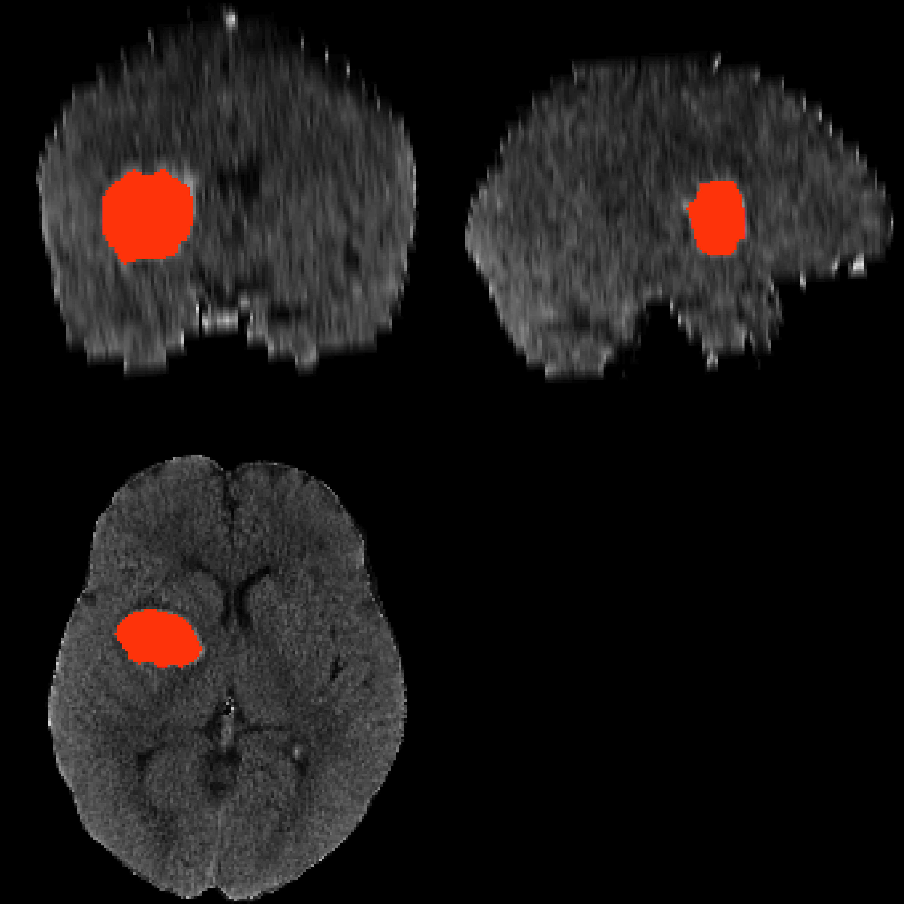
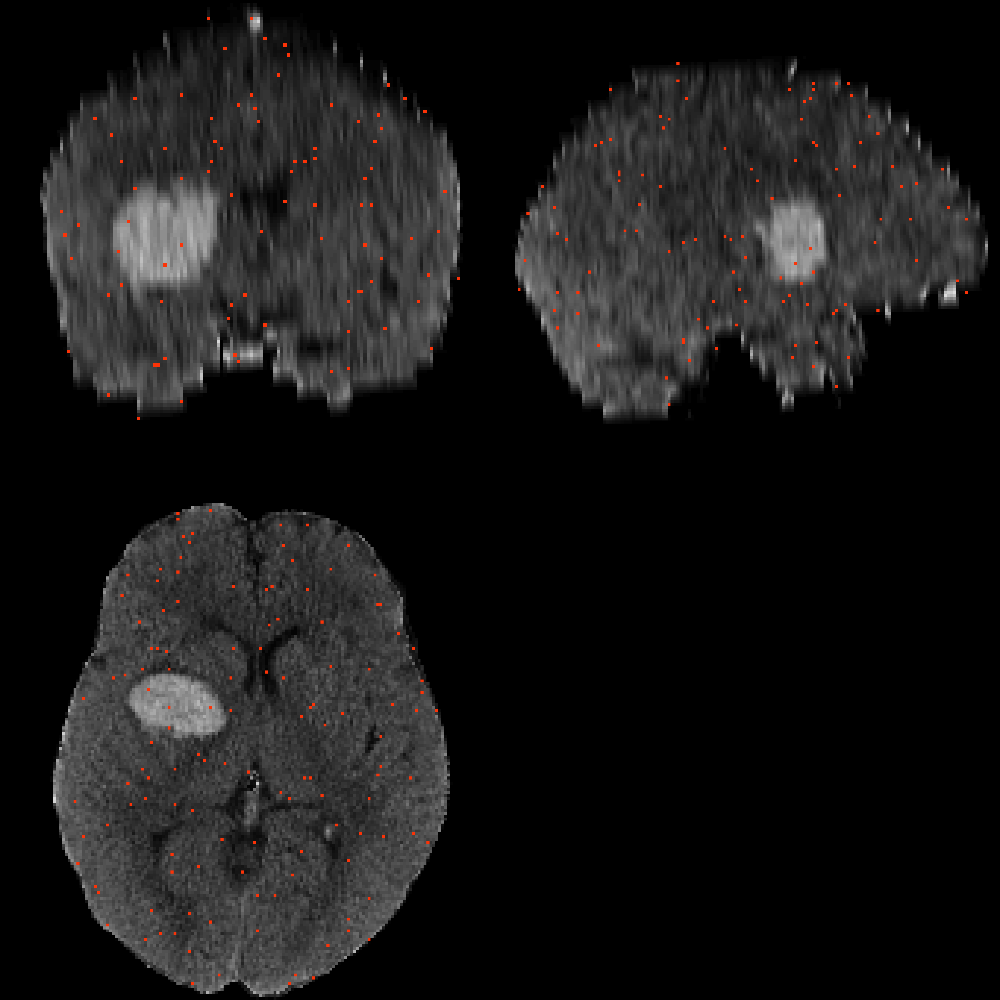
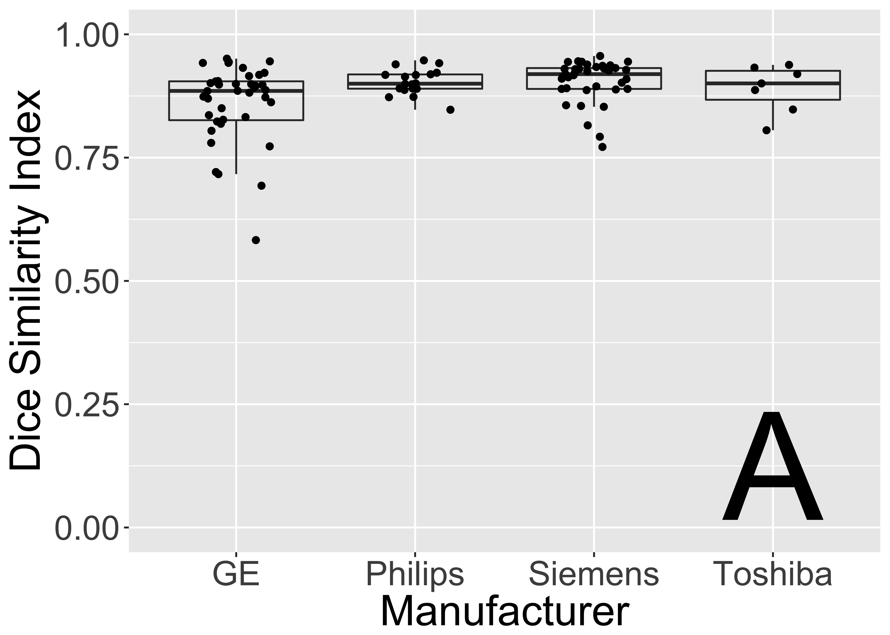
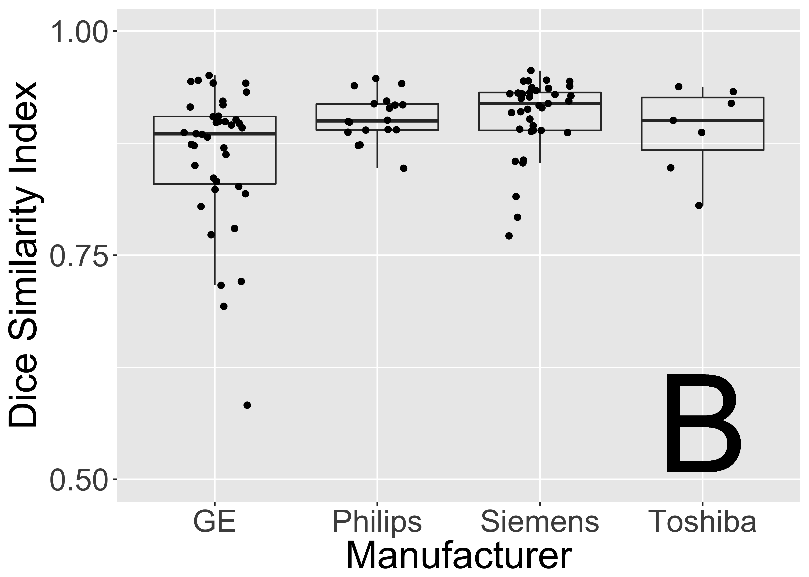
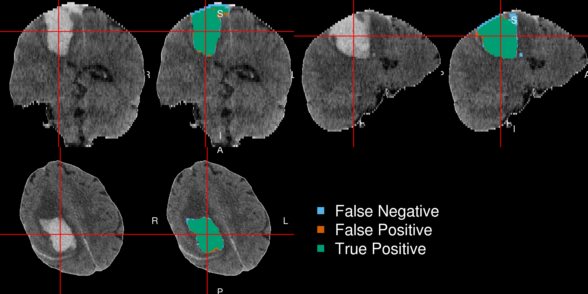

- Minimally Invasive Surgery plus r-tPA for Intracerebral Hemorrhage Evacuation (MISTIE)
- Multi-center, multi-national Phase II clinical trial
- Alteplase (donated by Genentech)

PI: Dr. Dan Hanley 
January 19, 2017

PI: Dr. Dan Hanley


Typical CT has \(512 \times 512 \times 30 ≈ 7.8\) million voxels


Muschelli, John, Elizabeth Sweeney, and Ciprian Crainiceanu. "brainR: Interactive 3 and 4D Images of High Resolution Neuroimage Data." R JOURNAL 6.1 (2014): 42-48.

Also has negative values


| Overall | |
|---|---|
| Age in Years: Mean (SD) | 60.8 (11.2) |
| Male: N (%) | 76 (68.5%) |
| Reader-Based Clot Location (%) | |
| Putamen | 68 (61.3) |
| Lobar | 33 (29.7) |
| Globus Pallidus | 6 ( 5.4) |
| Thalamus | 4 ( 3.6) |
| ICH Volume in mL: Mean (SD) | 37.4 (20.1) |
Local Mean: \(\bar{x}(v) = \frac{1}{27} \sum\limits_{k}^{27} x_k(v)\) 

Training Data Structure

Again, \(y_{i}(v)\) is the presence / absence of ICH for voxel \(v\) from person \(i\).
General model form: \[ P\{y_{i}(v) = 1\} \propto f\{X_{i}(v)\} \]
All models fit in R.
glm function)mgcv package)glmnet package): \[ \mathcal{L}\left[\left.Y_{i}(v) \right|\, f\{X_i(v)\}\right] \propto \beta_0 + \sum_{k= 1}^{p} x_{i, k}(v) \beta_{k} + \lambda \sum_{k= 1}^{p} \left|\beta_{k}\right|
\]randomForest package)
\(f(X_{i}(v)) \propto\) 
\[ \text{Estimated Volume}_{i} = \text{cc per voxel} \times \sum_{v}^{V_i} \hat{y}_{i}(v) \]
\[ \text{Volume}_{i} = \text{cc per voxel} \times \sum_{v}^{V_i} y_{i}(v) \]








Multiple pieces of software used

Lower the bar to entry
Complete pipeline


From Carp, Joshua. "The secret lives of experiments: methods reporting in the fMRI literature." Neuroimage 63.1 (2012): 289-300.
Number of downloads as of January 18, 2017 (cranlogs package):

Centralize the packages
Detailed tutorials on how to actually perform an analysis
Provide package checks / rules / stability


Allow neuroimaging to use all R has to offer:
https://www.coursera.org/learn/neurohacking/
Short Course: Neuroimaging analysis within R (ISBI, Melbourne, April 2017)
Statistics in Imaging (Pittsburgh, May 2017)
Dan Hanley
Ciprian Crainiceanu 
Brian Caffo 
Jean-Philippe Fortin 
Adi Gherman
Elizabeth Sweeney 
For each manual and automated segmentation, we can calculate the following 2-by-2 table, where the cells represent number of voxels and a corresponding Venn diagram:
| Manual | |||
| 0 | 1 | ||
| PitCH | 0 | TN | FN |
| 1 | FP | TP | |

We calculate the Dice Similarity Index (DSI): \[ \definecolor{red}{RGB}{255,0,0} \definecolor{blue}{RGB}{0,0,255} \definecolor{purple}{RGB}{128,0,128} \definecolor{blac,}{RGB}{0,0,0} \frac{ \color{purple} 2 \times \# \text{TP} }{ \color{purple} 2 \times \#\text{TP} \color{black} + \color{red} \text{FN} \color{black} + \color{blue} \text{FP}} \]


Not started yet
\(^*\) - working with Jean-Philippe Fortin on these
The knitcitations, knitr, pander, plyr, RefManageR, rmarkdown, and tableone packages were used to create this presentation in RStudio.
setting value version R version 3.3.3 (2017-03-06) system x86_64, darwin13.4.0 ui X11 language (EN) collate en_US.UTF-8 tz America/New_York date 2017-05-29 package * version date backports 1.1.0 2017-05-22 base * 3.3.3 2017-03-07 bibtex 0.4.0 2014-12-31 bitops 1.0-6 2013-08-17 class 7.3-14 2015-08-30 colorout * 1.1-0 2015-04-20 datasets * 3.3.3 2017-03-07 devtools 1.13.1 2017-05-13 digest 0.6.12 2017-01-27 DT 0.2 2016-08-09 e1071 1.6-8 2017-02-02 evaluate 0.10 2016-10-11 graphics * 3.3.3 2017-03-07 grDevices * 3.3.3 2017-03-07 grid 3.3.3 2017-03-07 htmltools 0.3.6 2016-12-08 htmlwidgets 0.8 2016-11-09 httr 1.2.1.9000 2017-03-09 jsonlite 1.4 2017-04-08 knitcitations * 1.0.7.1 2016-02-01 knitr * 1.16 2017-05-18 lattice 0.20-35 2017-03-25 lubridate 1.6.0 2016-09-13 magrittr 1.5 2014-11-22 Matrix 1.2-10 2017-04-28 memoise 1.1.0 2017-04-21 methods * 3.3.3 2017-03-07 pander * 0.6.0 2016-06-17 plyr * 1.8.4 2016-06-08 R6 2.2.1 2017-05-10 Rcpp 0.12.11 2017-05-22 RCurl 1.95-4.8 2016-03-01 RefManageR * 0.13.1 2016-11-13 RJSONIO 1.3-0 2014-07-28 rmarkdown 1.5 2017-04-26 rprojroot 1.2 2017-01-16 splines 3.3.3 2017-03-07 stats * 3.3.3 2017-03-07 stringi 1.1.5 2017-04-07 stringr 1.2.0 2017-02-18 survey 3.31-5 2016-12-01 survival 2.41-3 2017-04-04 tableone * 0.7.3 2015-11-11 tools 3.3.3 2017-03-07 utils * 3.3.3 2017-03-07 withr 1.0.2 2016-06-20 XML 3.98-1.7 2017-05-03 yaml 2.1.14 2016-11-12 zoo 1.8-0 2017-04-12 source CRAN (R 3.3.2) local CRAN (R 3.2.0) CRAN (R 3.2.0) CRAN (R 3.3.3) Github (jalvesaq/colorout@1539f1f) local CRAN (R 3.3.2) cran (@0.6.12) CRAN (R 3.3.0) CRAN (R 3.3.2) CRAN (R 3.3.0) local local local Github (rstudio/htmltools@4fbf990) CRAN (R 3.3.2) Github (gaborcsardi/httr@30001d4) CRAN (R 3.3.2) Github (cboettig/knitcitations@afffa3e) CRAN (R 3.3.2) CRAN (R 3.3.2) CRAN (R 3.3.0) CRAN (R 3.2.0) CRAN (R 3.3.2) cran (@1.1.0) local Github (Rapporter/pander@48fa9ed) CRAN (R 3.3.0) CRAN (R 3.3.2) cran (@0.12.11) CRAN (R 3.2.4) CRAN (R 3.3.2) CRAN (R 3.2.0) CRAN (R 3.3.2) cran (@1.2) local local cran (@1.1.5) cran (@1.2.0) CRAN (R 3.3.2) CRAN (R 3.3.2) CRAN (R 3.2.2) local local CRAN (R 3.3.0) CRAN (R 3.3.2) CRAN (R 3.3.2) CRAN (R 3.3.2)

Image from http://www.strokecenter.org/patients/about-stroke/ischemic-stroke/
R Data packages for testing

Image from http://www.strokecenter.org/patients/about-stroke/ischemic-stroke/